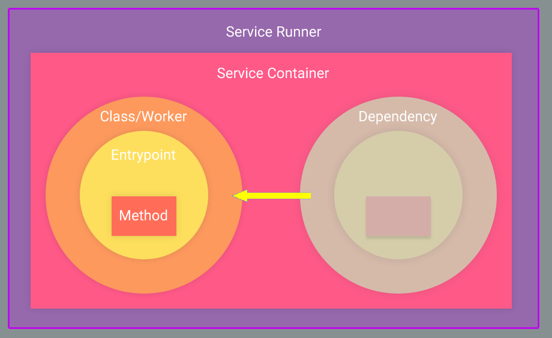

Service Architecture¶
In this tutorial we will look at the Nameko service architecture.
Let’s learn about the architecture in parts. We will go inside-out.
Service Method¶
It is the unit which contains the application logic and does the real work when gets invoked. Is the regular class method decorated with entrypoint.
Entrypoint¶
It act as a gatway to outside world for a service method. It controls any interaction of method with other foreign entities.
Service Class / Worker¶
It the class that encapsulates all the application as methods, some are exposed through entrypoint as service methods others are helper methods. Worker is as an instance of service class, it is created when an entrypoint is fired.
Service Dependency¶
Many times a service is dependent on other services, these services act as dependencies which resides in separate space than the invoked service.
Extensions¶
Any piece of code outside of application logic considered as an extension e.g. entrypoint and service dependency.
Service Container¶
Is an encapsulation of a single service class with all of its extensions.
Service Runner¶
Is a thin wrapper around single or multiple service containers. It run these container simultaneously.